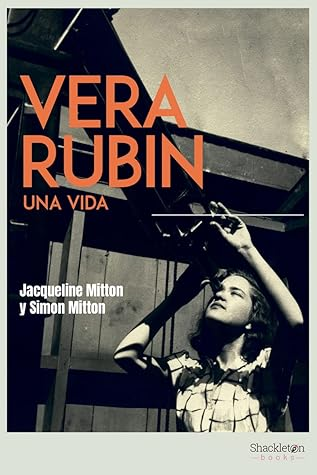

Vera Rubin: Una vida
Reseña por Jorge I. Zuluaga

Ver reseña en GoodReads (necesita cuenta)
Hace poco, con motivo de la inminente primera luz del Observatorio Vera Rubin en Chile, preparé una sencilla charla sobre la profesora Cooper-Rubin que ofrecí en el Planetario de Medellín.
Los pocos datos que conseguí sobre la vida de esta astrofísica (no había muchos en línea, lamentablemente) me llamaron mucho la atención. Algo sabía ya de la vida de Cooper-Rubin, pero esta sencilla introducción despertó finalmente mi curiosidad por encontrar lo que pudiera sobre ella.
Fue una casualidad que por los mismos días me encontrara esta maravillosa y completa biografía entre los estantes de mi librería local favorita (la librería Grammata en Medellín); Grammata es quizás la única librería que comercializa los textos de la editorial independiente Shackleton en Medellín —que publicó en 2022 la versión que leí—. Así que, ni corto ni perezoso, compré el libro, pero solo hasta ahora, que se presentó otra vez la necesidad de hablar de la vida de Cooper-Rubin en un curso de Astrofísica Galáctica que estoy dictando, lo devoré sin demora.
El libro está muy bien organizado y bien escrito; además, es agradable de leer. La parte que narra los primeros años de formación de Cooper-Rubin puede resultar pesada para quien no conozca con anterioridad algo de la vida de la profesora o para quien no esté muy interesado en esos aspectos más personales.
Mientras leía esta parte, confirmé una intuición que creo es más común de lo que imagino, y es la de que no todas las grandes personalidades de la historia de las ciencias han tenido vidas dignas de un drama griego; que muchas de ellas, como es el caso de la joven Vera Cooper, fueron personas comunes y corrientes, que tuvieron vidas sin grandes sobresaltos, sin grandes pérdidas o traumas, como a veces pensamos que es la vida de la mayoría de las personas que cambian el mundo. Sobre esto, creo que no es exagerado decir que alrededor de los grandes personajes de la Historia se ha creado una mitología a veces un poco exagerada y que muchas veces esperamos leer en sus biografías: traumáticas infancias o juventudes, truculentas historias familiares, tormentosas historias de amor o desamor, o relaciones tóxicas con personas de mayor o menor autoridad. Pues bien, poco de eso se encontrarán en la biografía de Jacqueline y Simon Mitton o en la vida de la profesora Cooper-Rubin. Afortunadamente.
La "segunda" parte (que comienza en el capítulo "La llamada de la cúpula"), dedicada a su trabajo ya como astrónoma doctorada, a sus primeros descubrimientos y a sus obstáculos al intentar realizar una tarea —las observaciones astronómicas directamente con los telescopios profesionales, que estaban normalmente encargadas a astrónomos varones— y los descubrimientos que le han valido el aprecio imperecedero en la comunidad científica, resulta más emocionante.
A mis estudiantes de astrofísica, por ejemplo, les recomiendo leer los tres capítulos "Aventuras en Andrómeda", "Una luz brillante sobre la materia oscura" y "El universo dinámico", que creo son los más excitantes de toda la biografía y además los que tienen el mayor contenido científico. Además, en estos capítulos están los mejores ejemplos —al menos en lo que respecta al trabajo profesional— que nos ofrece la vida de la profesora Cooper-Rubin a todas las personas que hacemos ciencia.
¿Por qué me refiero a la profesora Cooper-Rubin de esa manera y no llamándola como todo el mundo, simplemente Vera Rubin?
En primer lugar, por respeto. De la misma manera que hablamos de Hubble o de Shapley y no de Edwin o Harlow, creo que es importante acostumbrarnos a llamar a las grandes astrónomas del pasado usando sus apellidos: Cooper-Rubin, Bell, Herschel.
En segundo lugar, porque Rubin es el apellido de la familia de su esposo, el también científico Robert Rubin. Si bien comprendí en esta biografía que Bob Rubin (como le llamaban familiarmente) fue un gran compañero de vida para Vera Cooper, que la apoyó y la ayudó como pocos hombres hemos apoyado a nuestras compañeras, me sigue pareciendo bastante injusto que el nombre de las mujeres en el mundo anglosajón deba cambiar por el de la familia de sus esposos.
Estoy seguro de que la profesora Cooper-Rubin no tuvo nunca ningún problema en hacerlo —aunque firmaba sus manuscritos como Vera C. Rubin, lo que me da a entender que tenía una cierta resistencia a abandonar el nombre de su familia—, pero creo que lo más justo es que los demás recordemos que antes de ser Rubin fue Cooper (que algunos dirán que es el apellido de su abuelo, así que quedamos como en las mismas... ¡pero no!).
No puedo terminar esta reseña sin mencionar el aspecto por el que la profesora Cooper-Rubin debería ser recordada tanto como por el reconocido hecho de haber apuntalado la existencia de la materia oscura sobre pruebas empíricas irrefutables (un descubrimiento por el cual, lamentablemente, no recibió el premio Nobel de Física, como debería haberlo hecho).
Me refiero al hecho de ser una de las más notables abanderadas de la igualdad de oportunidades para las mujeres en el mundo de las ciencias. También al hecho de haber sido siempre una profesora capaz de impulsar con interés genuino las carreras de sus estudiantes, de todos los géneros y orígenes, dando prioridad a aquellas personas que sabía tendrían menos oportunidades sin su apoyo comprometido. Las anécdotas que leemos en el libro de los Mitton, y que nos cuentan cómo la Cooper-Rubin obligó a los editores del Astronomical Journal a publicar uno de sus trabajos más importantes incluyendo entre los coautores a estudiantes de pregrado, o cómo se quejó de la poca presencia de mujeres en eventos a los que era invitada o entre las personas resaltadas en alguna premiación de prestigio, son un verdadero ejemplo para quienes trabajamos en ciencia.
Mi admiración por Vera Cooper-Rubin solo se ha multiplicado leyendo esta biografía. Espero seguir hablando de ella con mejores fundamentos en mis clases y charlas. Considero, además, que esta es una biografía que deberían leer las personas, hombres y mujeres, que se están formando hoy como profesionales de la astronomía, y así intentaré que lo hagan aquellas con las que tenga contacto.